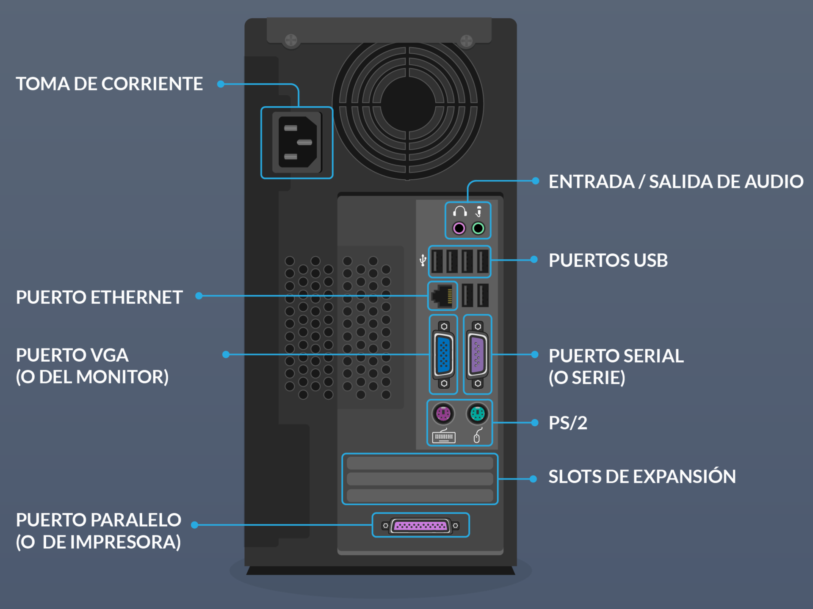

Como conectar los cables de PC
Aprende paso a paso cómo conectar correctamente los cables de tu computadora de escritorio.
Paso 1: Identifica los cables
Observa los cables que vienen con tu computadora: alimentación, monitor, teclado, mouse, etc.
Paso 2: Conecta el cable de alimentación
Ubica el cable de corriente y conéctalo desde la fuente de poder de la PC a la toma eléctrica.
Paso 3: Conecta los periféricos
Conecta el monitor, teclado y mouse en los puertos correspondientes de la parte trasera de la PC.
Paso 4: Verifica las conexiones
Asegúrate de que todos los cables estén bien conectados antes de encender la computadora.